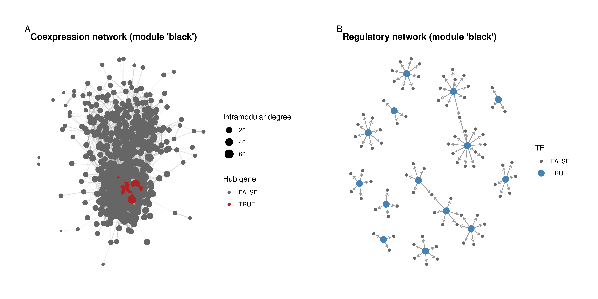

library(here)
library(GraphExperiment)
library(BioNERO)
library(SummarizedExperiment)
library(tidyverse)
library(ggraph)
library(patchwork)
set.seed(123) # for reproducibility1 Use case 1: gene coexpression and regulatory networks
Here, we will use GraphExperiment to store gene-gene networks inferred from bulk RNA-seq data. We will use the maize (Zea mays) gene expression data set distributed with the BioNERO package (Almeida-Silva and Venancio 2021), which contains 28 samples from different tissues (Shin et al. 2020). From these data, we will infer a gene coexpression network (GCN) and a gene regulatory network (GRN), and store both in the rowGraphs slot of a GraphExperiment object.
1.1 Data description and processing
The expression data are stored in a SummarizedExperiment object with a gene expression matrix (in TPM) and sample metadata. BioNERO also contains a data frame with maize transcription factors (TFs), which we will use to infer the GRN.
# Load data
data(zma.se)
data(zma.tfs)
zma.seclass: SummarizedExperiment
dim: 10802 28
metadata(0):
assays(1): ''
rownames(10802): ZeamMp030 ZeamMp044 ... Zm00001d054106 Zm00001d054107
rowData names(0):
colnames(28): SRX339756 SRX339757 ... SRX2792103 SRX2792104
colData names(1): Tissuetable(zma.se$Tissue)
endosperm pollen whole_seedling
8 5 15 head(zma.tfs) Gene Family
6 Zm00001d022525 Dof
25 Zm00001d037605 GATA
28 Zm00001d049540 NAC
45 Zm00001d042287 MYB
46 Zm00001d042288 NAC
54 Zm00001d039371 TCPTo keep this example lightweight, we will remove lowly expressed genes and keep only the top 2,000 most variable genes. We will also use exp_preprocess() to remove outlier samples and adjust for confounders.
# Preprocess data and keep only the top 2,000 most variable genes
exp <- exp_preprocess(
zma.se, min_exp = 10, variance_filter = TRUE, n = 2000
)
expclass: SummarizedExperiment
dim: 2000 27
metadata(0):
assays(1): ''
rownames(2000): ZeamMp030 ZeamMp092 ... Zm00001d054093 Zm00001d054107
rowData names(0):
colnames(27): SRX339756 SRX339757 ... SRX2792103 SRX2792104
colData names(1): Tissue1.2 Gene coexpression network inference
Next, we will infer a GCN with the WGCNA algorithm (Langfelder and Horvath 2008) as implemented in BioNERO. First, we need to pick the power \(\beta\) to which correlation coefficients will be raised to make the network fit a scale-free topology.
# Pick power for scale-free topology fit
sft <- SFT_fit(exp, net_type = "signed hybrid", cor_method = "pearson") Power SFT.R.sq slope truncated.R.sq mean.k. median.k. max.k.
1 3 0.293000 0.27100 0.1180 384.0 386.0 689
2 4 0.000141 -0.00465 -0.2750 290.0 272.0 584
3 5 0.210000 -0.20100 0.0542 227.0 202.0 509
4 6 0.427000 -0.35900 0.2990 184.0 155.0 452
5 7 0.583000 -0.48400 0.4780 153.0 121.0 407
6 8 0.665000 -0.58300 0.5720 129.0 96.0 370
7 9 0.697000 -0.66500 0.6110 111.0 77.8 339
8 10 0.786000 -0.71800 0.7260 95.8 64.1 313
9 11 0.787000 -0.77600 0.7310 83.8 53.4 290
10 12 0.821000 -0.82800 0.7810 73.9 44.7 270
11 13 0.857000 -0.86700 0.8290 65.6 37.5 252
12 14 0.884000 -0.89500 0.8660 58.6 31.5 236
13 15 0.890000 -0.91400 0.8710 52.7 26.7 221
14 16 0.884000 -0.93900 0.8630 47.6 22.9 208
15 17 0.886000 -0.96300 0.8630 43.1 19.7 196
16 18 0.896000 -0.97500 0.8740 39.2 17.0 185
17 19 0.905000 -0.98400 0.8840 35.8 14.8 175
18 20 0.914000 -0.99300 0.8930 32.8 12.8 166sft$power[1] 12Now, we can infer the GCN.
# Infer the GCN
gcn <- exp2gcn(
exp, net_type = "signed hybrid", SFTpower = sft$power,
cor_method = "pearson"
)..connectivity..
..matrix multiplication (system BLAS)..
..normalization..
..done.# Number of genes per module
table(gcn$genes_and_modules$Modules)
black cyan darkgreen darkred grey purple red
518 878 245 222 56 42 39 The object returned by exp2gcn() contains the adjacency matrix of the full network, which we will convert to an igraph object. Note that we will not filter edges here. The adjacency matrix represents a complete, weighted graph, with edge weights representing the (soft-thresholded) coexpression between gene pairs. Then, we will add module assignments and intramodular connectivities as node attributes.
# Convert adjacency matrix to an igraph object
gcn_graph <- graph_from_adjacency_matrix(
gcn$adjacency_matrix, mode = "undirected", weighted = TRUE, diag = FALSE
)
# Add module assignments and intramodular degree as node attributes
nodes <- V(gcn_graph)$name
modules <- setNames(gcn$genes_and_modules$Modules, gcn$genes_and_modules$Genes)
V(gcn_graph)$module <- modules[nodes]
V(gcn_graph)$kWithin <- gcn$kIN[nodes, "kWithin"]
# Identify hub genes and add them as node attributes
hubs <- get_hubs_gcn(exp, gcn)
V(gcn_graph)$is_hub <- nodes %in% hubs$Gene
gcn_graphIGRAPH f08f502 UNW- 2000 1621533 --
+ attr: name (v/c), module (v/c), kWithin (v/n), is_hub (v/l), weight
| (e/n)
+ edges from f08f502 (vertex names):
[1] ZeamMp030--ZeamMp092 ZeamMp030--ZeamMp116 ZeamMp030--ZemaCp003
[4] ZeamMp030--ZemaCp004 ZeamMp030--ZemaCp005 ZeamMp030--ZemaCp008
[7] ZeamMp030--ZemaCp009 ZeamMp030--ZemaCp021 ZeamMp030--ZemaCp022
[10] ZeamMp030--ZemaCp024 ZeamMp030--ZemaCp026 ZeamMp030--ZemaCp027
[13] ZeamMp030--ZemaCp028 ZeamMp030--ZemaCp029 ZeamMp030--ZemaCp034
[16] ZeamMp030--ZemaCp035 ZeamMp030--ZemaCp036 ZeamMp030--ZemaCp040
[19] ZeamMp030--ZemaCp044 ZeamMp030--ZemaCp045 ZeamMp030--ZemaCp051
+ ... omitted several edgesThe result is an igraph object with vertex (or node) attributes name, module, kWithin, and is_hub, and an edge attribute weight.
1.3 Gene regulatory network inference
Now, we will infer a GRN using the ‘wisdom of the crowds’ approach implemented in exp2grn(), which combines the results of GENIE3, ARACNE, and CLR (Huynh-Thu et al. 2010; Margolin et al. 2006; Faith et al. 2007) and selects the top edges that make the network best fit a scale-free topology.
# Get TFs among the top 2,000 most variable genes
tfs <- intersect(zma.tfs$Gene, rownames(exp))
length(tfs)[1] 31# Infer GRN
grn_edges <- exp2grn(exp, regulators = tfs, nTrees = 1000)
head(grn_edges) Regulator Target
285 Zm00001d041474 Zm00001d012007
280 Zm00001d041474 Zm00001d006602
291 Zm00001d041474 Zm00001d027374
282 Zm00001d041474 Zm00001d008691
288 Zm00001d041474 Zm00001d015811
304 Zm00001d042263 Zm00001d045042GRNs typically include only a subset of the genes, as genes that are not regulated by any TF (or that are not TFs) are not included in the edge list. However, GraphExperiment requires that nodes in row graphs match row names exactly. Thus, when creating the igraph object, we will include all genes as nodes, and genes that are not in the GRN will be represented as isolated nodes.
# Create a directed graph from the edge list, including all genes as nodes
grn_graph <- graph_from_data_frame(
grn_edges, directed = TRUE, vertices = data.frame(name = rownames(exp))
)
grn_graphIGRAPH df6644c DN-- 2000 247 --
+ attr: name (v/c)
+ edges from df6644c (vertex names):
[1] Zm00001d041474->Zm00001d012007 Zm00001d041474->Zm00001d006602
[3] Zm00001d041474->Zm00001d027374 Zm00001d041474->Zm00001d008691
[5] Zm00001d041474->Zm00001d015811 Zm00001d042263->Zm00001d045042
[7] Zm00001d041474->Zm00001d018986 Zm00001d041474->Zm00001d014773
[9] Zm00001d041474->Zm00001d011541 Zm00001d041474->Zm00001d006942
[11] Zm00001d054038->Zm00001d032547 Zm00001d041474->Zm00001d018668
[13] Zm00001d025339->Zm00001d035115 Zm00001d041474->Zm00001d015279
[15] Zm00001d042263->Zm00001d043382 Zm00001d044315->Zm00001d043497
+ ... omitted several edges1.4 Storing networks in a GraphExperiment object
Now that we have both networks, we can store them in a GraphExperiment object along with the expression data and sample metadata. We will also add gene-level metadata indicating whether each gene encodes a TF.
# Add gene-level metadata to `rowData`
rowData(exp)$is_TF <- rownames(exp) %in% zma.tfs$Gene
rowData(exp)$TF_family <- zma.tfs$Family[match(rownames(exp), zma.tfs$Gene)]
# Create a `GraphExperiment` object
ge <- GraphExperiment(
assays = assays(exp),
colData = colData(exp),
rowData = rowData(exp),
rowGraphs = list(gcn = gcn_graph, grn = grn_graph)
)
geclass: GraphExperiment
dim: 2000 27
metadata(0):
assays(1): ''
rownames(2000): ZeamMp030 ZeamMp092 ... Zm00001d054093 Zm00001d054107
rowData names(5): is_TF TF_family gcn__module gcn__kWithin gcn__is_hub
colnames(27): SRX339756 SRX339757 ... SRX2792103 SRX2792104
colData names(1): Tissue
reducedDimNames(0):
mainExpName: NULL
altExpNames(0):
rowGraphs(2): gcn grn
colGraphs(0):rowGraphNames(ge)[1] "gcn" "grn"Note that node attributes in each graph are automatically added to rowData, with column names in the format <graph name>__<attribute>. This way, module assignments, intramodular degree, and hub status can be accessed (and used, e.g., for subsetting) as any other feature-level metadata.
rowData(ge)DataFrame with 2000 rows and 5 columns
is_TF TF_family gcn__module gcn__kWithin gcn__is_hub
<logical> <character> <character> <numeric> <logical>
ZeamMp030 FALSE NA black 27.178194 FALSE
ZeamMp092 FALSE NA purple 1.567267 FALSE
ZeamMp108 FALSE NA purple 0.214523 FALSE
ZeamMp116 FALSE NA purple 4.144444 FALSE
ZeamMp158 FALSE NA grey 0.175042 FALSE
... ... ... ... ... ...
Zm00001d054065 FALSE NA cyan 201.6571 FALSE
Zm00001d054084 FALSE NA cyan 222.0207 FALSE
Zm00001d054089 FALSE NA cyan 175.8362 FALSE
Zm00001d054093 FALSE NA black 18.8067 FALSE
Zm00001d054107 FALSE NA cyan 92.0203 FALSEThe opposite also holds: when graphs are extracted with rowGraph(), variables in rowData are added as node attributes. In other words, features and their metadata are always synchronized, regardless of whether one is working with the assay or with the graphs.
# Extract GRN with `rowData` variables as node attributes
grn_graph <- rowGraph(ge, "grn")
grn_graphIGRAPH df6644c DN-- 2000 247 --
+ attr: name (v/c), is_TF (v/l), TF_family (v/c)
+ edges from df6644c (vertex names):
[1] Zm00001d041474->Zm00001d012007 Zm00001d041474->Zm00001d006602
[3] Zm00001d041474->Zm00001d027374 Zm00001d041474->Zm00001d008691
[5] Zm00001d041474->Zm00001d015811 Zm00001d042263->Zm00001d045042
[7] Zm00001d041474->Zm00001d018986 Zm00001d041474->Zm00001d014773
[9] Zm00001d041474->Zm00001d011541 Zm00001d041474->Zm00001d006942
[11] Zm00001d054038->Zm00001d032547 Zm00001d041474->Zm00001d018668
[13] Zm00001d025339->Zm00001d035115 Zm00001d041474->Zm00001d015279
[15] Zm00001d042263->Zm00001d043382 Zm00001d044315->Zm00001d043497
+ ... omitted several edges1.5 Exploring the networks
Since all data are stored in a single object, subsetting is straightforward. For example, let’s subset the object to keep only genes in the module with the largest number of TFs. Subsetting a GraphExperiment object subsets assays, rowData, and all graphs in rowGraphs simultaneously.
# Get the module with the largest number of TFs
tfs_per_module <- table(rowData(ge)$gcn__module[rowData(ge)$is_TF])
tfs_per_module
black cyan darkgreen darkred grey red
14 9 2 2 1 3 top_module <- names(which.max(tfs_per_module))
# Subset the object to keep only genes in this module
ge_mod <- ge[rowData(ge)$gcn__module == top_module, ]
ge_modclass: GraphExperiment
dim: 518 27
metadata(0):
assays(1): ''
rownames(518): ZeamMp030 Zm00001d000019 ... Zm00001d053845
Zm00001d054093
rowData names(5): is_TF TF_family gcn__module gcn__kWithin gcn__is_hub
colnames(27): SRX339756 SRX339757 ... SRX2792103 SRX2792104
colData names(1): Tissue
reducedDimNames(0):
mainExpName: NULL
altExpNames(0):
rowGraphs(2): gcn grn
colGraphs(0):Note that both graphs were filtered to keep only genes in the module.
# Check number of nodes per graph
lapply(rowGraphs(ge_mod), vcount)$gcn
[1] 518
$grn
[1] 518Finally, let’s visualize the coexpression and regulatory networks for genes in this module, highlighting TFs and hub genes. For visualization purposes, we will only display the strongest coexpression edges.
# Extract graphs from the subset object (with `rowData` as node attributes)
g_gcn <- rowGraph(ge_mod, "gcn")
g_grn <- rowGraph(ge_mod, "grn")
# Keep only top 5% edges in the GCN (for visualization only)
w <- E(g_gcn)$weight
g_gcn <- delete_edges(g_gcn, which(w < quantile(w, 0.95)))
# Remove isolated nodes from both graphs (for visualization only)
g_gcn <- delete_vertices(g_gcn, which(degree(g_gcn) == 0))
g_grn <- delete_vertices(g_grn, which(degree(g_grn) == 0))
# Plot GCN, with node size proportional to intramodular degree
p_gcn <- ggraph(g_gcn, layout = "fr") +
geom_edge_link(aes(alpha = weight), color = "grey60", show.legend = FALSE) +
geom_node_point(aes(size = kWithin, color = is_hub)) +
scale_color_manual(values = c(`FALSE` = "grey40", `TRUE` = "firebrick")) +
theme_graph(base_family = "sans") +
labs(
title = paste0("Coexpression network (module '", top_module, "')"),
color = "Hub gene", size = "Intramodular degree"
)
# Plot GRN, highlighting TFs
p_grn <- ggraph(g_grn, layout = "fr") +
geom_edge_link(
arrow = arrow(length = unit(1.5, "mm")), end_cap = circle(1.5, "mm"),
color = "grey60"
) +
geom_node_point(aes(color = is_TF, size = is_TF)) +
scale_color_manual(values = c(`FALSE` = "grey40", `TRUE` = "steelblue")) +
scale_size_manual(values = c(`FALSE` = 1.5, `TRUE` = 4)) +
theme_graph(base_family = "sans") +
labs(
title = paste0("Regulatory network (module '", top_module, "')"),
color = "TF", size = "TF"
)
wrap_plots(p_gcn, p_grn, nrow = 1) +
plot_annotation(tag_levels = "A") &
theme(plot.title = element_text(size = 13))
Because module assignments, hub status, and TF annotation travel together with the graphs, any downstream analysis (e.g., finding TFs that are hubs in both networks) can be done with standard SummarizedExperiment syntax.
# TFs that are also GCN hubs, with their out-degree in the GRN
rowData(ge) |>
as.data.frame() |>
rownames_to_column("gene") |>
filter(is_TF, gcn__is_hub) |>
mutate(grn_outdegree = degree(rowGraph(ge, "grn"), gene, mode = "out")) |>
select(gene, TF_family, gcn__module, gcn__kWithin, grn_outdegree) gene TF_family gcn__module gcn__kWithin grn_outdegree
1 Zm00001d025339 S1Fa-like red 10.37434 12
2 Zm00001d041474 LSD darkred 25.68034 16
3 Zm00001d042263 bHLH red 10.78855 7Session info
This document was created under the following conditions:
─ Session info ───────────────────────────────────────────────────────────────
setting value
version R version 4.5.2 (2025-10-31)
os Ubuntu 22.04.5 LTS
system x86_64, linux-gnu
ui X11
language (EN)
collate en_US.UTF-8
ctype en_US.UTF-8
tz Europe/Brussels
date 2026-10-24
pandoc 3.6.3 @ /opt/quarto/bin/tools/ (via rmarkdown)
quarto 1.8.25 @ /usr/local/bin/quarto
─ Packages ───────────────────────────────────────────────────────────────────
package * version date (UTC) lib source
abind 1.4-8 2024-09-12 [1] CRAN (R 4.5.2)
annotate 1.88.0 2025-10-29 [1] Bioconductor 3.22 (R 4.5.2)
AnnotationDbi 1.72.0 2025-10-29 [1] Bioconductor 3.22 (R 4.5.2)
backports 1.5.0 2024-05-23 [1] CRAN (R 4.5.2)
base64enc 0.1-3 2015-07-28 [1] CRAN (R 4.5.2)
Biobase * 2.70.0 2025-10-29 [1] Bioconductor 3.22 (R 4.5.2)
BiocBaseUtils 1.12.0 2025-10-29 [1] Bioconductor 3.22 (R 4.5.2)
BiocGenerics * 0.56.0 2025-10-29 [1] Bioconductor 3.22 (R 4.5.2)
BiocParallel 1.44.0 2025-10-29 [1] Bioconductor 3.22 (R 4.5.2)
BioNERO * 1.18.0 2025-10-29 [1] Bioconductor 3.22 (R 4.5.2)
Biostrings 2.78.0 2025-10-29 [1] Bioconductor 3.22 (R 4.5.2)
bit 4.6.0 2025-03-06 [1] CRAN (R 4.5.2)
bit64 4.6.0-1 2025-01-16 [1] CRAN (R 4.5.2)
blob 1.3.0 2026-01-14 [1] CRAN (R 4.5.2)
cachem 1.1.0 2024-05-16 [1] CRAN (R 4.5.2)
checkmate 2.3.3 2025-08-18 [1] CRAN (R 4.5.2)
circlize 0.4.17 2025-12-08 [1] CRAN (R 4.5.2)
cli 3.6.5 2025-04-23 [1] CRAN (R 4.5.2)
clue 0.3-67 2026-02-18 [1] CRAN (R 4.5.2)
cluster 2.1.8.1 2025-03-12 [4] CRAN (R 4.4.3)
coda 0.19-4.1 2024-01-31 [1] CRAN (R 4.5.2)
codetools 0.2-19 2023-02-01 [4] CRAN (R 4.2.2)
colorspace 2.1-2 2025-09-22 [1] CRAN (R 4.5.2)
ComplexHeatmap 2.26.1 2026-02-03 [1] Bioconductor 3.22 (R 4.5.2)
crayon 1.5.3 2024-06-20 [1] CRAN (R 4.5.2)
data.table 1.18.0 2025-12-24 [1] CRAN (R 4.5.2)
DBI 1.2.3 2024-06-02 [1] CRAN (R 4.5.2)
DelayedArray 0.36.0 2025-10-29 [1] Bioconductor 3.22 (R 4.5.2)
dichromat 2.0-1 2026-07-22 [1] CRAN (R 4.5.2)
digest 0.6.39 2025-11-19 [1] CRAN (R 4.5.2)
doParallel 1.0.17 2022-02-07 [1] CRAN (R 4.5.2)
dplyr * 1.1.4 2023-11-17 [1] CRAN (R 4.5.2)
dynamicTreeCut 1.63-1 2016-03-11 [1] CRAN (R 4.5.2)
edgeR 4.8.2 2025-12-25 [1] Bioconductor 3.22 (R 4.5.2)
evaluate 1.0.5 2025-08-27 [1] CRAN (R 4.5.2)
farver 2.1.2 2024-05-13 [1] CRAN (R 4.5.2)
fastcluster 1.3.0 2025-05-07 [1] CRAN (R 4.5.2)
fastmap 1.2.0 2024-05-15 [1] CRAN (R 4.5.2)
forcats * 1.0.1 2025-09-25 [1] CRAN (R 4.5.2)
foreach 1.5.2 2022-02-02 [1] CRAN (R 4.5.2)
foreign 0.8-90 2025-03-31 [4] CRAN (R 4.4.3)
Formula 1.2-5 2023-02-24 [1] CRAN (R 4.5.2)
genefilter 1.92.0 2025-10-29 [1] Bioconductor 3.22 (R 4.5.2)
generics * 0.1.4 2025-05-09 [1] CRAN (R 4.5.2)
GENIE3 1.32.0 2025-10-29 [1] Bioconductor 3.22 (R 4.5.2)
GenomicRanges * 1.62.1 2025-12-08 [1] Bioconductor 3.22 (R 4.5.2)
GetoptLong 1.1.0 2025-11-28 [1] CRAN (R 4.5.2)
ggdendro 0.2.0 2024-02-23 [1] CRAN (R 4.5.2)
ggforce 0.5.0 2025-06-18 [1] CRAN (R 4.5.2)
ggnetwork 0.5.14 2025-09-10 [1] CRAN (R 4.5.2)
ggplot2 * 4.0.1 2025-11-14 [1] CRAN (R 4.5.2)
ggraph * 2.2.2 2025-08-24 [1] CRAN (R 4.5.2)
ggrepel 0.9.6 2024-09-07 [1] CRAN (R 4.5.2)
GlobalOptions 0.1.3 2025-11-28 [1] CRAN (R 4.5.2)
glue 1.8.0 2024-09-30 [1] CRAN (R 4.5.2)
GraphExperiment * 1.1.2 2026-09-08 [1] Bioconductor
graphlayouts 1.2.3 2026-02-21 [1] CRAN (R 4.5.2)
gridExtra 2.3 2017-09-09 [1] CRAN (R 4.5.2)
gtable 0.3.6 2024-10-25 [1] CRAN (R 4.5.2)
here * 1.0.2 2025-09-15 [1] CRAN (R 4.5.2)
Hmisc 5.2-5 2026-01-09 [1] CRAN (R 4.5.2)
hms 1.1.4 2025-10-17 [1] CRAN (R 4.5.2)
htmlTable 2.4.3 2024-07-21 [1] CRAN (R 4.5.2)
htmltools 0.5.9 2025-12-04 [1] CRAN (R 4.5.2)
htmlwidgets 1.6.4 2023-12-06 [1] CRAN (R 4.5.2)
httr 1.4.7 2023-08-15 [1] CRAN (R 4.5.2)
igraph * 2.2.1 2025-10-27 [1] CRAN (R 4.5.2)
impute 1.84.0 2025-10-29 [1] Bioconductor 3.22 (R 4.5.2)
intergraph 2.0-4 2024-02-01 [1] CRAN (R 4.5.2)
IRanges * 2.44.0 2025-10-29 [1] Bioconductor 3.22 (R 4.5.2)
iterators 1.0.14 2022-02-05 [1] CRAN (R 4.5.2)
jsonlite 2.0.0 2025-03-27 [1] CRAN (R 4.5.2)
KEGGREST 1.50.0 2025-10-29 [1] Bioconductor 3.22 (R 4.5.2)
knitr 1.51 2025-12-20 [1] CRAN (R 4.5.2)
labeling 0.4.3 2023-08-29 [1] CRAN (R 4.5.2)
lattice 0.22-5 2023-10-24 [4] CRAN (R 4.3.1)
lifecycle 1.0.5 2026-01-08 [1] CRAN (R 4.5.2)
limma 3.66.0 2025-10-29 [1] Bioconductor 3.22 (R 4.5.2)
locfit 1.5-9.12 2025-03-05 [1] CRAN (R 4.5.2)
lubridate * 1.9.4 2024-12-08 [1] CRAN (R 4.5.2)
magrittr 2.0.4 2025-09-12 [1] CRAN (R 4.5.2)
MASS 7.3-65 2025-02-28 [4] CRAN (R 4.4.3)
Matrix 1.7-4 2025-08-28 [4] CRAN (R 4.5.1)
MatrixGenerics * 1.22.0 2025-10-29 [1] Bioconductor 3.22 (R 4.5.2)
matrixStats * 1.5.0 2025-01-07 [1] CRAN (R 4.5.2)
memoise 2.0.1 2021-11-26 [1] CRAN (R 4.5.2)
mgcv 1.9-4 2025-11-07 [4] CRAN (R 4.5.2)
minet 3.68.0 2025-10-29 [1] Bioconductor 3.22 (R 4.5.2)
NetRep 1.2.10 2026-04-12 [1] CRAN (R 4.5.2)
network 1.20.0 2026-02-07 [1] CRAN (R 4.5.2)
nlme 3.1-168 2025-03-31 [4] CRAN (R 4.4.3)
nnet 7.3-20 2025-01-01 [4] CRAN (R 4.4.2)
otel 0.2.0 2025-08-29 [1] CRAN (R 4.5.2)
patchwork * 1.3.2 2025-08-25 [1] CRAN (R 4.5.2)
pillar 1.11.1 2025-09-17 [1] CRAN (R 4.5.2)
pkgconfig 2.0.3 2019-09-22 [1] CRAN (R 4.5.2)
plyr 1.8.9 2023-10-02 [1] CRAN (R 4.5.2)
png 0.1-8 2022-11-29 [1] CRAN (R 4.5.2)
polyclip 1.10-7 2024-07-23 [1] CRAN (R 4.5.2)
preprocessCore 1.72.0 2025-10-29 [1] Bioconductor 3.22 (R 4.5.2)
purrr * 1.2.1 2026-01-09 [1] CRAN (R 4.5.2)
R6 2.6.1 2025-02-15 [1] CRAN (R 4.5.2)
RColorBrewer 1.1-3 2022-04-03 [1] CRAN (R 4.5.2)
Rcpp 1.1.1 2026-01-10 [1] CRAN (R 4.5.2)
readr * 2.1.6 2025-11-14 [1] CRAN (R 4.5.2)
reshape2 1.4.5 2025-11-12 [1] CRAN (R 4.5.2)
RhpcBLASctl 0.23-42 2023-02-11 [1] CRAN (R 4.5.2)
rjson 0.2.23 2024-09-16 [1] CRAN (R 4.5.2)
rlang 1.1.7 2026-01-09 [1] CRAN (R 4.5.2)
rmarkdown 2.30 2025-09-28 [1] CRAN (R 4.5.2)
rpart 4.1.24 2025-01-07 [4] CRAN (R 4.4.2)
rprojroot 2.1.1 2025-08-26 [1] CRAN (R 4.5.2)
RSQLite 2.4.5 2025-11-30 [1] CRAN (R 4.5.2)
rstudioapi 0.18.0 2026-01-16 [1] CRAN (R 4.5.2)
S4Arrays 1.10.1 2025-12-01 [1] Bioconductor 3.22 (R 4.5.2)
S4Vectors * 0.48.0 2025-10-29 [1] Bioconductor 3.22 (R 4.5.2)
S7 0.2.1 2025-11-14 [1] CRAN (R 4.5.2)
scales 1.4.0 2025-04-24 [1] CRAN (R 4.5.2)
Seqinfo * 1.0.0 2025-10-29 [1] Bioconductor 3.22 (R 4.5.2)
sessioninfo 1.2.3 2025-02-05 [1] CRAN (R 4.5.2)
shape 1.4.6.1 2024-02-23 [1] CRAN (R 4.5.2)
SingleCellExperiment * 1.32.0 2025-10-29 [1] Bioconductor 3.22 (R 4.5.2)
sna 2.8 2024-09-08 [1] CRAN (R 4.5.2)
SparseArray 1.10.8 2025-12-18 [1] Bioconductor 3.22 (R 4.5.2)
statmod 1.5.1 2025-10-09 [1] CRAN (R 4.5.2)
statnet.common 4.13.0 2025-12-16 [1] CRAN (R 4.5.2)
stringi 1.8.7 2025-03-27 [1] CRAN (R 4.5.2)
stringr * 1.6.0 2025-11-04 [1] CRAN (R 4.5.2)
SummarizedExperiment * 1.40.0 2025-10-29 [1] Bioconductor 3.22 (R 4.5.2)
survival 3.8-6 2026-01-16 [4] CRAN (R 4.5.2)
sva 3.58.0 2025-10-29 [1] Bioconductor 3.22 (R 4.5.2)
tibble * 3.3.1 2026-01-11 [1] CRAN (R 4.5.2)
tidygraph 1.3.1 2024-01-30 [1] CRAN (R 4.5.2)
tidyr * 1.3.2 2025-12-19 [1] CRAN (R 4.5.2)
tidyselect 1.2.1 2024-03-11 [1] CRAN (R 4.5.2)
tidyverse * 2.0.0 2023-02-22 [1] CRAN (R 4.5.2)
timechange 0.3.0 2024-01-18 [1] CRAN (R 4.5.2)
tweenr 2.0.3 2024-02-26 [1] CRAN (R 4.5.2)
tzdb 0.5.0 2025-03-15 [1] CRAN (R 4.5.2)
vctrs 0.7.1 2026-01-23 [1] CRAN (R 4.5.2)
viridis 0.6.5 2024-01-29 [1] CRAN (R 4.5.2)
viridisLite 0.4.2 2023-05-02 [1] CRAN (R 4.5.2)
WGCNA 1.74 2026-01-30 [1] CRAN (R 4.5.2)
withr 3.0.2 2024-10-28 [1] CRAN (R 4.5.2)
xfun 0.56 2026-01-18 [1] CRAN (R 4.5.2)
XML 3.99-0.20 2025-11-08 [1] CRAN (R 4.5.2)
xtable 1.8-4 2019-04-21 [1] CRAN (R 4.5.2)
XVector 0.50.0 2025-10-29 [1] Bioconductor 3.22 (R 4.5.2)
yaml 2.3.12 2025-12-10 [1] CRAN (R 4.5.2)
[1] /home/faalm/R/x86_64-pc-linux-gnu-library/4.5
[2] /usr/local/lib/R/site-library
[3] /usr/lib/R/site-library
[4] /usr/lib/R/library
* ── Packages attached to the search path.
──────────────────────────────────────────────────────────────────────────────